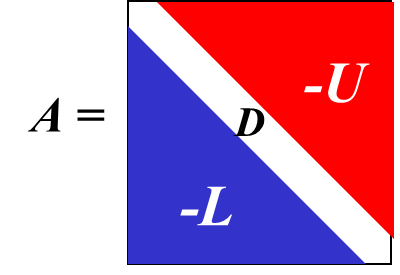

公式整理
第1章 导论¶
误差¶
绝对误差: \(e^* = x^* - x, 其中x为精确值, x^*为x的近似值\)
绝对误差限: \(|e^*|的上限\ \varepsilon^*\)
相对误差: \(e_r^* = \frac{e^*}x ≈ \frac{e^*}{x^*}\\\)
相对误差限: \(\varepsilon_r^* (= \frac{\varepsilon^*}{x}) = \frac{\varepsilon^*}{|x^*|}\\\)
有效数字¶
有效数字: 用科学记数法, 记\(近似值x^*=a_1.a_2a_3...a_n*10^m(其中a_1\neq 0)\), 若\((|e^*|=)\ |x^*-x|\leq \textcolor{red}{0.5}*10^{m-n+1}\)(即\(a_n\)的截取按照四舍五入规则), 则称\(x^*\)为n位有效数字, 精确到\(10^{m-n+1}\)
有效数字→相对误差限
- 已知\(x^*\)有n位有效数字, 其相对误差限为 \(\begin{aligned}\varepsilon_r^*&=\left|\frac{\varepsilon^*}{x^*}\right|=\frac{0.5\times10^{-(n-1)}\times10^m}{a_1.a_2\cdots a_n\times10^m}=\frac{10^{-(n-1)}}{2\times a_1.a_2\cdots}\leq\frac1{2a_1}\times10^{-(n-1)}\end{aligned}\)
相对误差限→有效数字
- 已知 x* 的相对误差限可写为\(\varepsilon_r*=\frac1{2(a_1+1)}\times10^{-(n-1)}\\\)
- 则: \(\begin{aligned}\mid x-x^*\mid&\leq\varepsilon_r^*\cdot\mid x^*\mid=\frac{10^{-(n-1)}}{2(a_1+1)}\times a_1.a_2\cdots\times10^m\\&<\frac{10^{-(n-1)}}{2(a_1+1)}\cdot(a_1+1)\times10^m=0.5\times10^{m-n+1}\end{aligned}\)
误差传递¶
加法: \(y^*=x_1^*+x_2^*\)
- \(\varepsilon(y^*)\leq\varepsilon(x_1^*)+\varepsilon(x_2^*)\) 误差限直接相加
乘法: \(y^*=x_1^*\cdot x_2^*\)
- \(\varepsilon(y^*)\leq|x_2^*|\varepsilon(x_1^*)+|x_1^*|\varepsilon(x_2^*)\)
- 会受\(|x_1^*|, |x_2^*|\)影响
除法: \(y^*=\frac{x_1^*}{x_2^*}\\\)
- \(\varepsilon(y^*)\leq\frac{|x_2^*|\varepsilon(x_1^*)+|x_1^*|\varepsilon(x_2^*)}{\left|x_2^*\right|^2}\\\)
第2章 插值法¶
拉格朗日插值¶
拉格朗日余项
牛顿插值¶
差商(均差)
牛顿插值多项式
基础: \(N_n(x)=\alpha_0+\alpha_1(x-x_0)+\alpha_2(x-x_0)(x-x_1)+....+\alpha_n(x-x_0)...(x-x_{n-1})\)
代入差商得
均差的性质¶
①k阶均差-f(x)的线性表示
②差商与x的顺序无关
- 如 \(f[x_0,x_1,x_2]=f[x_0,x_2,x_1]=f[x_2,x_1,x_0]\)
③k阶差商与k阶导
当\(f^(k)(x)\)在包含节点\(x_0,x_1,\cdots,x_k\)的区间存在时，在\(x_0,x_1,\cdots,x_k\)之间必存在一点\(\xi\),使得\(f[x_0,x_1,\cdots,x_k]=\frac{f^{(k)}(\xi)}{k!}\\\)
Hermite插值¶
两点三次Hermite插值
\(H_3(x)\)应满足插值条件
用四个基函数表示\(\color{blue}H_3(x) = y_0α_0(x) + y_1\alpha_1(x)+y_0'\beta_0(x)+y'\beta_1(x)\)
余项
第4章 数值积分¶
简单的积分近似计算方式:
- 求积节点一般是给定的, 我们的目标就是确定求积系数\(A_k\)
Newton-Cotes数值求积分¶
积分区间: \([a,b]\)
求积节点: \(x_k = a + kh, h = \frac{b-a}{n}\)
求积系数: \(A_k=\int_a^bl_k(x)dx=\cdots=(b-a)C_k^{(n)}\\\)
- \(C_k^{(n)}\)为Cotes系数, 仅取决于n和k, 查表获取
余项: \(R(I_n)=\int_a^bR_n(x)dx \quad 其中, R_n(x)=\frac{f^{(n+1)}(\xi)}{(n+1)!}\omega_{n+1}(x)\\\)
- 实际上就是拉格朗日余项求积
低阶Newton-Cotes公式¶
梯形公式(n=1)¶
求积节点: \(a, b\)
梯形求积公式(两点公式): \(T=I_1(f)=\frac{(b-a)}2[f(a)+f(b)]\\\)
梯形公式余项: \(R(T)=R(I_1)=\int_a^bR_1(x)dx=-\frac{(b-a)^3}{12}f^{\prime\prime}(\eta)\\\)
- 梯形(trapezia)公式具有1次代数精度
Simpson公式(n=2)¶
求积节点: \(x_0, x_1, x_2\)
Simpson求积公式(三点公式, 抛物线公式): \(\begin{aligned}S=I_2(f)&=(b-a)[\frac16f(x_0)+\frac46f(x_1)+\frac16f(x_2)]\\&=\frac{b-a}6[f(a)+4f(\frac{a+b}2)+f(b)]\end{aligned}\)
Simpson公式的余项: \(R(S)=R(I_2)=\int_a^bR_2(x)dx =-\frac{b-a}{180}\Big(\frac{b-a}{2}\Big)^4f^{(4)}(\eta)\\\)
- Simpson公式具有3次代数精度
Newton-Cotes公式 代数精度定理¶
定理：当n为偶数时，Newton-Cotes公式至少具有n+1次代数精度
Newton-Cotes公式的稳定性¶
记精确值为\(f(x_k)\),近似值为\(\tilde{f}(x_k)\), 误差\(\varepsilon_k=f(x_k)-\tilde{f}(x_k)\)
则积分精确值和近似值误差为: \(I_n-\tilde{I}_n=(b-a)\sum_{k=0}^nC_k^{(n)}[f(x_k)-\tilde{f}(x_k)]\\\)
- 性质\(:\sum_{k=0}^nC_k^{(n)}=1\)
- \(\varepsilon=\max\{|\varepsilon_k|\}\)
\(\text{若 }\forall k\leq n\text{,}C_k^{(n)}>0\text{,有}\left|I_n-\vec{I}_n\right|\leq(b-a)\varepsilon\)
结论
Newton-Cotes公式的舍入误差只是函数值误差的(b-a)倍
即\(\forall k\leq n\text{ ,C}_k^{(n)}>0\)时, Newton-Cotes公式是稳定的
- 稳定: 指误差是否会在计算过程中显著增长
- 实际上, 当n<8时, 公式都是稳定的
若\(C_k^{(n)}\)有正有负，有\((b-a)\varepsilon\sum_{k=0}^n\left|C_k^{(n)}\right|\geq(b-a)\varepsilon\sum_{k=0}^nC_k^{(n)}=(b-a)\varepsilon\)
此时,公式的稳定性将无法保证
- 因此,在实际应用中一般不使用高阶Newton-Cotes公式, 而是采用低阶复合求积法
复合求积公式¶
公式与余项¶
| 求积公式 | 单纯求积公式的余项 | 复合求积公式的余项 | |
|---|---|---|---|
| \(T_n\) | \(\frac h2[f(a)+2\sum_{k=1}^{n-1}f(x_k)+f(b)]\\\) | \(-\frac{(b-a)}{12}(b-a)^2f''(\eta)\\\) | \(-\frac{(b-a)}{12}(h)^2f''(\eta)\\\) |
| \(S_n\) | \(\frac h6[f(a)+4\sum_{k=0}^{n-1}f(x_{k+\frac12})+2\sum_{k=1}^{n-1}f(x_k)+f(b)]\\\) | \(-\frac{b-a}{180}(\frac{b-a}2)^4f^{(4)}(\eta)\\\) | \(-\frac{b-a}{180}(\frac{h}2)^4f^{(4)}(\eta)\\\) |
- 复合求积公式的误差就是将小区间(长度为步长h)的误差逐个累加
收敛阶¶
定义: 若一个积分公式的误差满足 \(\lim_{h\to0}\frac{R[f]}{h^p}=C<\infty, 且C\neq 0\\\) 则称该公式是\(p\) 阶收敛的。
- \(T_n\thicksim O\left(h^2\right),S_n\thicksim O\left(h^4\right),C_n\thicksim O\left(h^6\right)\)
龙贝格算法¶
第一级\(T_0^{(k)}\)计算公式(梯形递推公式):
- 也叫逐次分半复化梯形公式
- 如[0,1], 对于k=3, 步长为\(\frac1{2^3}=\frac18\\\), 右边加的数就是\(\frac18[f(\frac18)+f(\frac{3}{8})+f(\frac{5}{8})+f(\frac{7}{8})]\\\)
加速公式: \(T_m(k-1)=\frac1{4^m-1}[4^mT_{m-1}(k)-T_{m-1}(k-1)]\\\)

第5章 解线性方程组的直接方法¶
矩阵三角分解法¶
杜立特分解法
- 其中U的第一行\(a_{1i}^{(1)}\)等于矩阵A的第一行
- L的第一列\(m_{i1}=\frac{a_{i1}}{a^{(1)}_{11}}\\\)
- 其他元素通过矩阵乘法 (解方程)计算 出来
向量和矩阵范数¶
在向量空间\(R^n(C^n)\)中, \(x = (x_1, x_2, ..., x_n)^T\), 常用的向量x的范数
- x的2-范数或欧氏范数: \(\left\|x\right\|_2 =(\begin{array}{c}\left|x_1\right|^2+\left|x_2\right|^2+\cdots+\left|x_n\right|^2\end{array})^{1/2}\)
- x的1-范数: \(\left\|x\right\|_{1}=\left|x_1\right|+\left|x_2\right|+\cdots+\left|x_n\right|\)
- x的∞范数(最大范数): \(\left\|x\right\|_\infty =\max_{1\leq i\leq n}\left|x_i\right|\\\)
- x的p-范数: \(||x||_p = (|x_1|^p+|x_2|^p+...|x_n|^p)^{1/p}\)
- \(\begin{gathered} \max_{1\leq i\leq n}\left|x_i\right| \leq\left(\left|x_1\right|^p+\left|x_2\right|^p+\cdots+\left|x_n\right|^p\right)^{1/p}\leq\left(n\max_{1\leq i\leq n}\left|x_i\right|^p\right)^{1/p} =n^{1/p}\max_{1\leq i\leq n}\left|x_i\right|\to\max_{1\leq i\leq n}\left|x_i\right|\left(p\to\infty\right) \end{gathered}\)
算子范数:
特别有:
- 行和范数: \(\parallel A\parallel_\infty=\max_{1\leq i\leq n}\sum_{j=1}^n\mid a_{ij}\mid\\\) (最大的行之和)
- 列和范数: \(\parallel A\parallel_1=\max_{1\leq j\leq n}\sum_{i=1}^n\mid a_{ij}\mid\\\) (最大的 列之和)
- 2-范数: \(\parallel A\parallel_2=\sqrt{\lambda_{\max}(A^TA)}\) (\(A^TA\)矩阵的最大特征值)
谱半径
定义 矩阵A的谱半径记为\(\rho(A)=\max_{1\leq i\leq n}|\lambda_i|\),其中\(\lambda_i\) 为A的特征根
线性方程组误差分析¶
\(||A||\cdot ||A^{-1}||\)是关键的误差放大因子, 称为A的条件数, 即为\(cond(A)\)
- 越大, A越病态, 难以求得准确解
根据算子范数的不同, 条件数也不同
条件数的性质
- A可逆, 则\(cond(A)_p \geq 1\)
- A可逆, \(a\in R\),则\(cond(\alpha A)=cond(A)\)
- A正交, 则\(cond(A)_2=1\)
- A可逆, R正交, 则\(cond(RA)_2=cond(AR)_2=cond(A)_2\)
第6章 解线性方程组的迭代法¶
迭代过程通用表示: \(x^{(k+1)}=Bx^{(k)}+f\), 其中\(B\in R^n\times n,f\in R^n,x\in R^n\)
- B称为迭代矩阵, f为常数项
雅可比迭代¶
迭代过程:
其中: \(D = diag(a_{11}, a_{22}, ...,a_{nn})\), 为方程组系数矩阵A的对角线

Gauss-Seidel迭代法¶
迭代过程:
迭代法收敛性¶
判断是否收敛：
- 是否严格对角占优
算出迭代矩阵B
- 范数是否<1 (用∞和1范数即可, 2范数不如直接算谱半径)
- 算谱半径, 判断是否<1
定理1: 迭代格式收敛的充要条件为 \(\lim_{k\to\infty}B^{k}=0\\\)
- 不常用, 矩阵乘法可太难算了
定理2: 迭代格式收敛的充要条件为谱半径\(\rho(B)<1\)
- 因为矩阵的谱半径不超过其任一种算子范数,即\(\rho(B)<||B||_v\) , 可得如下充分条件
定理 (充分条件) 若存在一个矩阵范数使得\(\parallel B\parallel=q<1\), 则迭代收敛，且有下列误差估计：
定理(充分条件): 若线性方程组\(Ax=b\)的系数矩阵\(A\)为严格对角占优矩阵，则Jacobi法和\(G-S\)法均收敛
- 矩阵严格对角占优: \(\mid a_{ii}\mid>\sum_{j\neq i}\mid a_{ij}\mid\quad i=1,2,3,\cdots,n\\\) 对角线上的值比行上的其他值加起来都大
- 可得 \(\frac1{\mid a_{ii}\mid}\sum_{j\neq i}\mid a_{ij}\mid<1\quad i=1,2,3,\cdots,n\\\)
第7章 非线性方程与方程组的数值解法¶
二分法¶
设[a,b]为单根区间
取中点\(x_0=\frac12(a+b)\)
- 若\(f(x_0)=0\), \(x_0\)记为\([a,b]\)中的根
- 若\(f(a)\cdot f(x_0)<0\), 则\([a, x_0]\)为有根区间, 令\(a_1=a, b_1=x_0\)
- 若\(f(x_0)\cdot f(b)<0\), 则\([x_0, b]\)为有根区间, 令\(a_1=x_0, b_1=b\)
一轮操作后, 有根区间\([a,b]\)缩小为一半\([a_1, b_1]\)
循环, 继续取\([a_1, b_1]\)的中点\(x_1=\frac12(a_1+b_1)\), 得到新区间\([a_2, b_2]\)
以此类推, 有\(x_n = \frac12(a_n+b_n)\)
对于每个小区间都有\((b_n-a_n)=\frac1{2^{n+1}}(b-a)\\|x_n-x_{n-1}|=\frac{1}{2^{n+1}}(b-a)\)
确定适当的n, 可以得到任意要求的精度 (\(|x_{k+1}-x_k|<\varepsilon_1\))
误差分析
对于第0步的\(x_0=\frac12(a+b)\)有误差\(\varepsilon=|x_0-x^*|\leq\frac{b-a}2\\\)
第k步的\(x_k\)误差:\(\varepsilon=|x_k-x^*|\leq \frac{b-a}{2^{k+1}}\\\)
对于给定的精度ε,可估计二分法所需的步数 k ：\(\frac{b-a}{2^{k+1}}<\varepsilon\quad\Rightarrow\quad k>\frac{\left[\ln\left(b-a\right)-\ln\varepsilon\right]}{\ln2}-1\\\)
迭代法¶
不动点迭代法¶
将非线性方程\(f(x)=0\)化为一个同解方程\(x=\varphi(x)\), 且设\(\varphi(x)\)连续
任取初值\(x_0\)代入, 得\(x_1=\varphi(x_0), x_2=\varphi(x_1)\cdots, x_k=\varphi(x_{k-1})\)
称上式为求解非线性方程\(x=\varphi(x)\)的不动点迭代法
- 称\(\varphi(x)\)为迭代函数, \(x_k\)为第k步迭代值
迭代法收敛定理¶
定理: 设迭代函数\(\varphi(x)\)在[a,b]上连续, 且满足
- 当\(x\in[a,b]\)时,\(\ a\leq\varphi(x)\leq b\)
- 存在一个整数L, 满足\(0<L<1\)且\(\forall x\in [a,b]\), 有\(|\varphi'(x)|\leq L\)(上确界为L)
则有以下结论
- 方程\(x=\varphi(x)\)在\([a,b]\)内有唯一解\(x^*\)
- 对于任意初值\(x_0\in[a,b]\), 迭代法\(x_{k+1}=\varphi(x_k)\)均收敛于\(x^*\)
- \(\left|x_k-x^*\right|\leq\frac L{1-L}\left|x_k-x_{k-1}\right|\\\)
- \(\left|x_k-x^*\right|\leq\frac{L^k}{1-L}\left|x_1-x_0\right|\\\)
- \(\left|x_k-x^*\right|\leq\frac L{1-L}\left|x_k-x_{k-1}\right|\leq\frac{L^k}{1-L}\left|x_1-x_0\right|\\\)
收敛的阶¶
定义: 若存在实数\(p\geq1\)和\(c>0\)满足\(\lim_{k\to\infty}\frac{e_{k+1}}{e_k^p}=c\\\)(\(e_{k+1}和e_k^p\)同阶无穷小), 则称迭代法p阶收敛
- 当p=1称为线性收敛, p>1时称为超线性收敛, p=2时称为平方收敛
定理: 如果迭代法迭代函数 \(\varphi(x)\)在根\(x^*\)附近满足：
- \((1)\varphi(x)\)存在\(p\)阶导数处连续；
- \((2)\varphi^{\prime}(x^*)=\varphi^{\prime\prime}(x^*)=\cdots=\varphi^{(p-1)}(x^*)=0\),而\(\varphi^{(p)}{(x^*)}\neq0\)
则迭代法\(x_{k+1}=\varphi(x_k)\)的收敛阶是\(p\)
牛顿法¶
迭代函数: \(x_{k+1}=x_k-\frac{f(x_k)}{f'(x_k)}\quad(k=0,1,2,\cdots)\\\)
收敛的充分条件¶
设\(f\in C^2[a, b]\)若
- \(f(a)f(b)<0\) (区间端点异号, 有根)
- 在整个\([a,b]\)区间上, \(f''\)不变号, 且\(f'(x)\neq 0\) (根唯一)
- 选取\(x_0\in[a,b]\)使得\(f(x_0)f''(x_0)>0\) (产生的序列单调有界, 保证收敛)
则牛顿迭代法产生的序列\(\{x_k\}\)收敛到\(f(x)\)在\([a,b]\)区间内的唯一根
局部收敛性¶
设 \(f \in C^2[a, b]\)，若 x 为 \(f(x)\) 在[a, b]上的单根*，且 \(f ’(x^*) \neq 0\)，则存在 x* 的邻域\(B_\delta (x^*)\)使得任取初值\(x_0\in B_\delta (x^*)\) ，Newton’s Method产生的序列\(\{ x_k \}\)收敛到x*，且满足\(\lim_{k\to\infty}\frac{x^*-x_{k+1}}{\left(x^*-x_k\right)^2}=-\frac{f^{\prime\prime}(x^*)}{2f^{\prime}(x^*)}\\\)
一些其他公式(失忆)¶
二项式定理
基本不等式